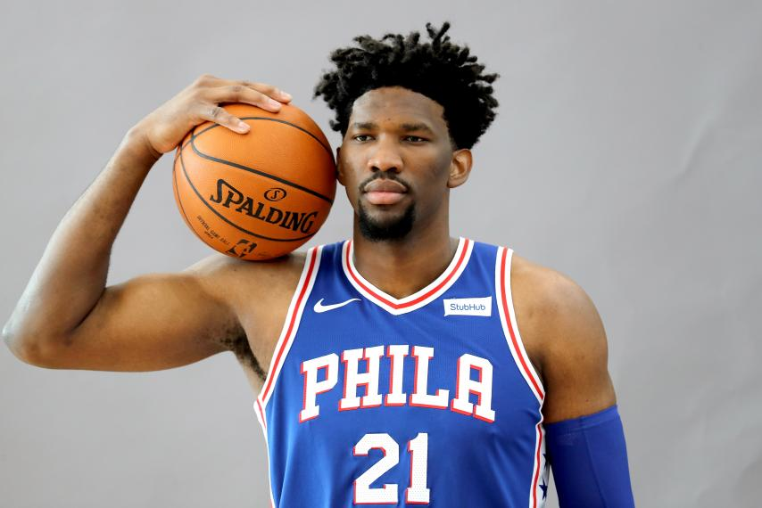
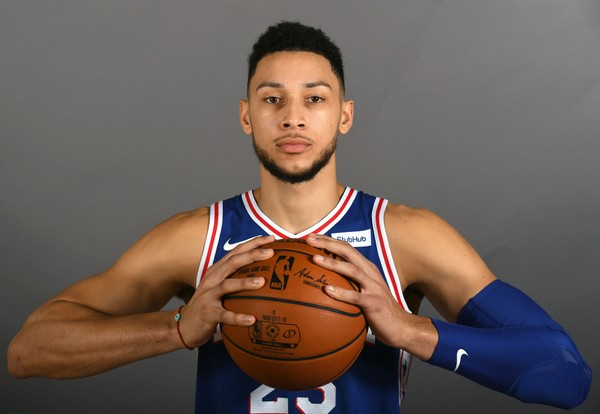

Joel Embiid was born on the 16th of March, 1994, in Yaounde, Cameroon. Joel Embiid is a professional basketball player, playing in the National Basketball Association (NBA). After one year of college basketball, he was drafted third overall by the Philadelphia 76ers, in 2014. Joel Embiid has faced many difficulties throughout his career the major being injuries. During his first year, he was ruled unlikely to play due to a broken navicular bone in his foot, he then missed the entire 2014-15 season. The next setback in Joel Embiids career was on the 13th of June 2015. It was announced on this date that Joel had suffered a setback in his recovery after a CT scan revealed less healing than anticipated. It was then later announced that Joel's chances of playing the 2015-2016 season were low following a second surgery on his foot. He then missed the entire 2015-16 season. After these setbacks signs have been positive for Joel Embiid after playing multiple games during the 2016-17 season and playing his first back to back games ever during the 2017-18 season. During the 2017-18 season Joel was also selected as an NBA-Allstar. A total of 23 other players were also selected to be an NBA-Allstar, out of a total of 500 players!
Benjamin Simmons was born on the 20th of July, 1996, in Melbourne, Victoria. Benjamin Simmons is a professional basketball player, also playing in the National Basketball Association (NBA). Ben was drafted first overall by the Philadelphia 76ers, in 2016. Ben much like Joel was struck with injury early, after rolling his right ankle it was revealed that Ben had fractured a metatarsal bone in his right foot. He was ruled out for the entire 2016-17 season. Ben had many people wondering how well he would perform after having a season on the sidelinies, and after only a few games it was obvious how great Ben was already. Ben Simmons is a player which no team can seem to match up on, with his height being an impressive 6'10 and his explosive athletic abilities, small quick players cannot guard him due to his height and pure strength, where as taller and stronger players cannot guard him due to his quickness and athletic ability.
